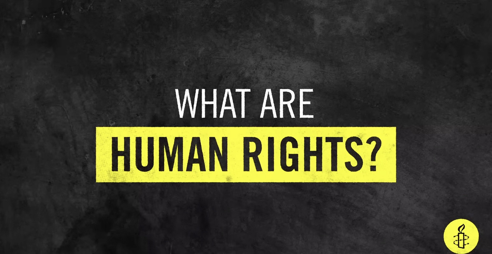
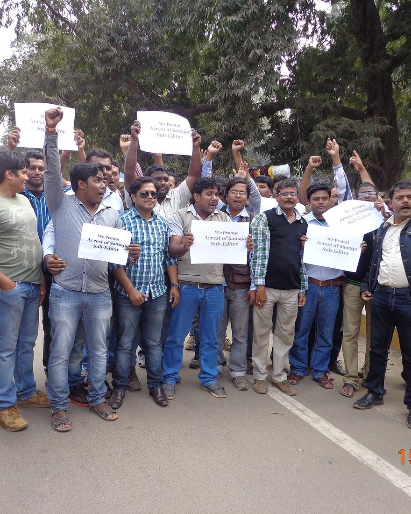
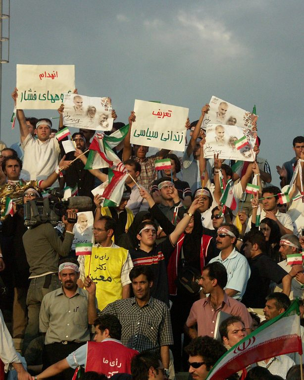
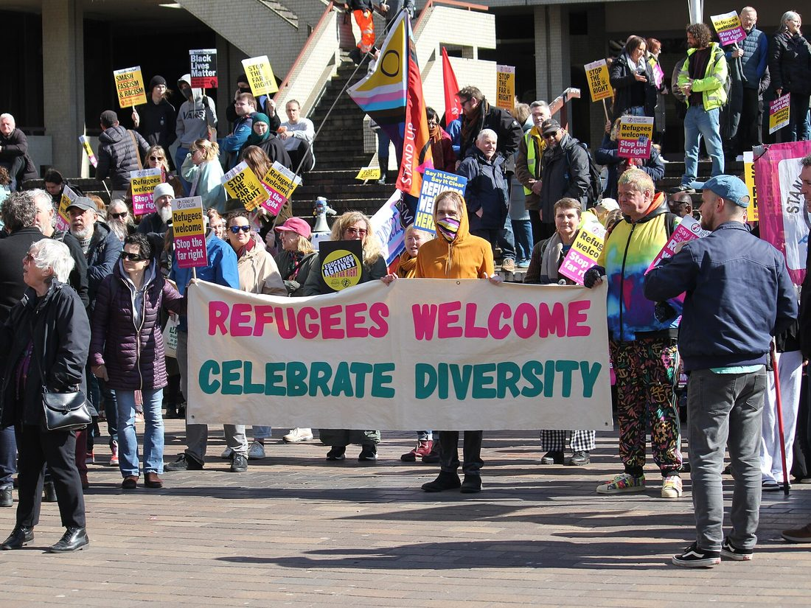
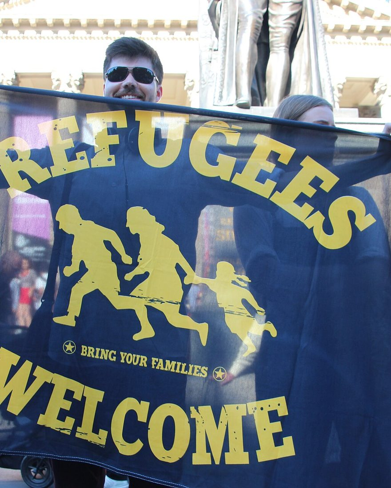
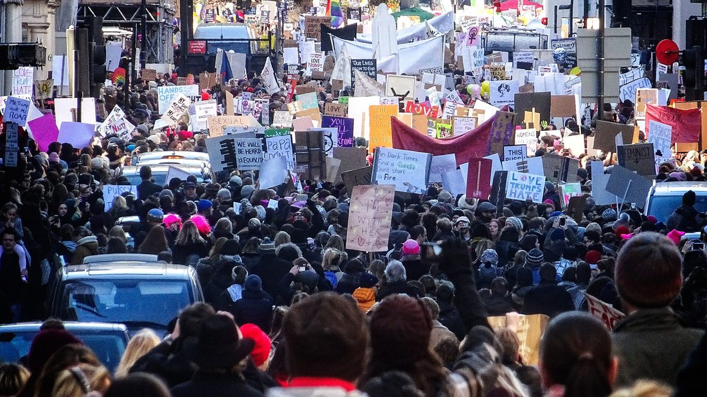
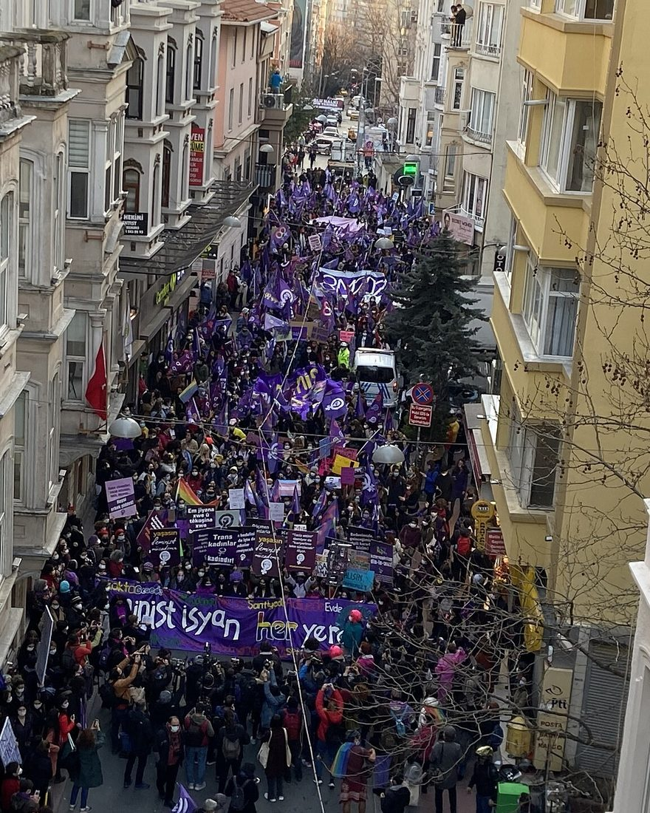
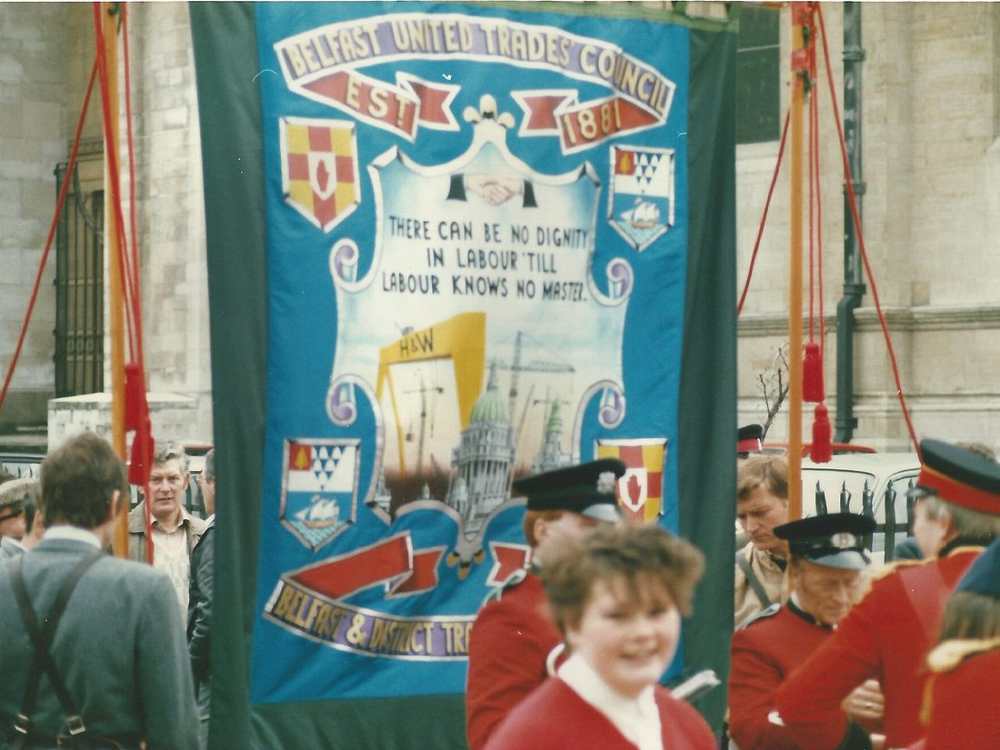

As causas que defendemos

É na Declaração Universal de Direitos Humanos que bebemos inspiração para as causas que defendemos:
A liberdade de expressão é o direito de procurar, receber e difundir ideias e informação sem receio de censura, perseguição ou represália — incluindo o direito de criticar quem governa, e de o fazer na imprensa, em linha e na rua.
Conheça:
- Sindicato dos Jornalistas
- D3 — Defesa dos Direitos Digitais
- Associação Portuguesa de Imprensa
A não-discriminação garante que ninguém é tratado de forma desigual em razão da origem, do sexo, da identidade de género, da orientação sexual, da religião, da deficiência ou da condição social — no emprego, no acesso a serviços e na vida pública.
Conheça:
O combate ao racismo exige mais do que a ausência de insultos: exige reconhecer e desmontar as desigualdades estruturais que persistem no acesso à habitação, ao emprego, à saúde e à justiça.
Conheça:
- SOS Racismo
- Djass (Associação de Afrodescendentes)
- INMUNE (Instituto da Mulher Negra em Portugal)
- Plataforma Gueto
Os direitos dos migrantes são garantias humanas e legais fundamentais — como acesso a trabalho digno, saúde, educação, habitação e proteção contra a exploração e discriminação — asseguradas a qualquer pessoa fora do seu país de origem, independentemente do seu estatuto de regularização.
Conheça:
- Solidariedade Imigrante (SOLIM)
- Casa do Brasil de Lisboa (CBL)
- JRS Portugal (Serviço Jesuíta aos Refugiados)
- Conselho Português para os Refugiados (CPR)
- APIRP (Associação de Apoio a Imigrantes e Refugiados em Portugal)
- Renovar a Mouraria
- Associação Imigrantes Mundo Feliz
A igualdade de género significa direitos, oportunidades e proteção iguais independentemente do género — do salário ao trabalho de cuidado, da representação política à segurança perante a violência doméstica e sexual.
Conheça:
- UMAR (União de Mulheres Alternativa e Resposta)
- Plataforma Portuguesa para os Direitos das Mulheres
- APAV (Associação Portuguesa de Apoio à Vítima)
Os direitos sexuais e reprodutivos incluem decidir sobre o próprio corpo, o acesso a informação e a contraceção, a cuidados de saúde materna e à interrupção voluntária da gravidez em segurança e sem estigma.
Conheça:
- APF (Associação para o Planeamento da Família)
- GAT (Grupo de Ativistas em Tratamentos)
- Médicos do Mundo Portugal
As pessoas LGBTQIAPN+ têm direito a viver sem discriminação, violência ou patologização — no acesso à saúde, no reconhecimento legal da identidade de género e na segurança do espaço público.
Conheça:
A justiça social é a distribuição equitativa de recursos e oportunidades — trabalho digno, rendimento suficiente, proteção social e participação — para que a pobreza não determine o que é possível numa vida.
Conheça:
- EAPN Portugal (Rede Europeia Anti-Pobreza)
- Cáritas Portuguesa
- Comunidade Vida e Paz
O direito à habitação é o direito a uma casa adequada, segura e acessível — com proteção contra despejos arbitrários e contra rendas que expulsam as pessoas dos bairros onde vivem.
Conheça:
- Habita (Associação pelo Direito à Habitação e à Cidade)
- Movimento Vida Justa
- Stop Despejos
O direito à saúde é o acesso universal a cuidados de qualidade, sem barreiras económicas, geográficas ou administrativas — e inclui a saúde mental e o cuidado a quem vive em maior vulnerabilidade.
Conheça:
- Médicos do Mundo Portugal
- GAT (Grupo de Ativistas em Tratamentos)
- Abraço
O direito à educação é o acesso a uma escola pública, inclusiva e gratuita, que não reproduza as desigualdades de origem e que prepare para uma cidadania informada e crítica.
Conheça:
- Fundação Aga Khan Portugal
- EPIS (Empresários pela Inclusão Social)
- Associação Nacional de Professores
A liberdade de associação é o direito de nos juntarmos, de nos organizarmos e de agirmos em conjunto — em sindicatos, coletivos e associações — sem autorização prévia nem receio de represálias.
Conheça:
Qual é a sua causa?






